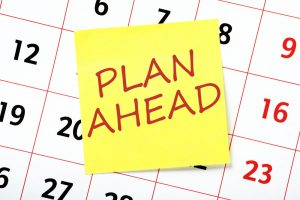
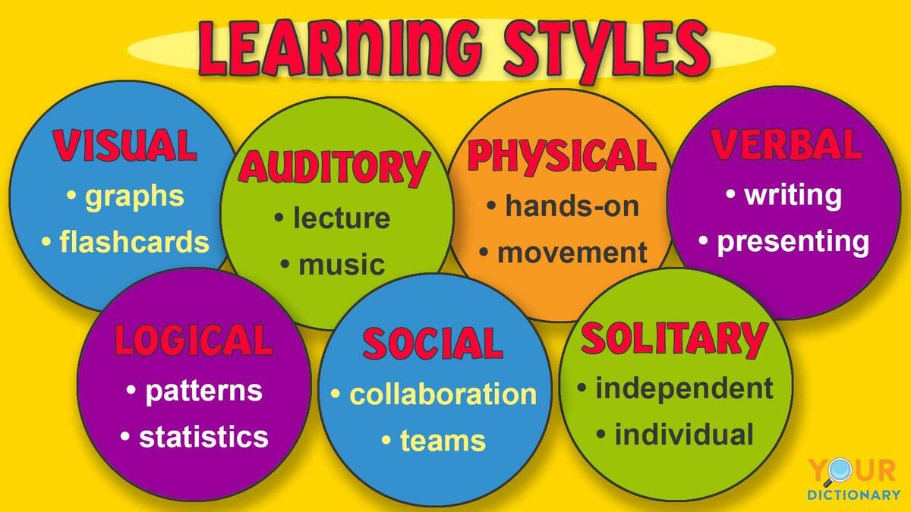
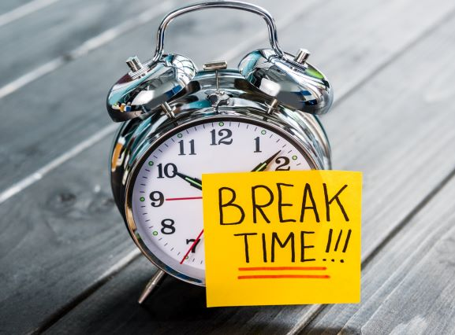
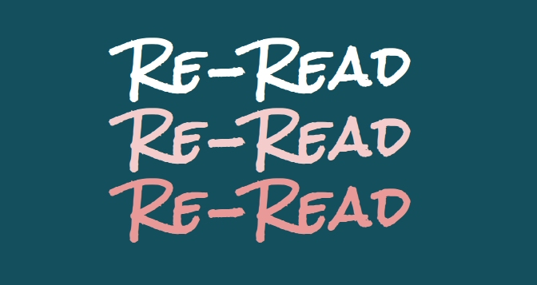
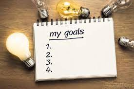

Study tips
-Don't cram -what is cramming?-Cramming is essentially trying to stuff a load of information into your short-term memory in time for an upcoming exam. This has been proven to increase stress levels, and can lead to panic and anxiety, making it a lot harder to take in information.
-Plan Ahead and Stick To It-This will prevent stress and will help you get your work done on time and at a better quality because you dont have to rush it.
-Ask for Help-two heads aare better than one,if you dont understand something ask someone who can help you understand.
-Find Your Learning Style-Finding your learning style is important because this can help you learn more efficently and at a faster paste,weather it's by using flash cards or lestening to it as back as a voice recording/video
-Take Breaks-Taking breaks is essential because not taking then can result in burning out this is when your brain is too tired to take in anymore informantion.
-Cultivate a Productive Space-This is very important so the space you are studying in is quiet and adequate for you to study in without interuptions or destractions.

-Reward Yourself-This helps motivate you to do some study knowing after you'll get to enjoy something when you've completed your study.

-Review,Review,Review-Going back over the information you've studied is the best way to retain that information so you won't forget it.
-Set Specific Goals-Setting goals is a really good form of organisation,which ensures that you get done what you need to get done this helps you avoid stress and cramming.
